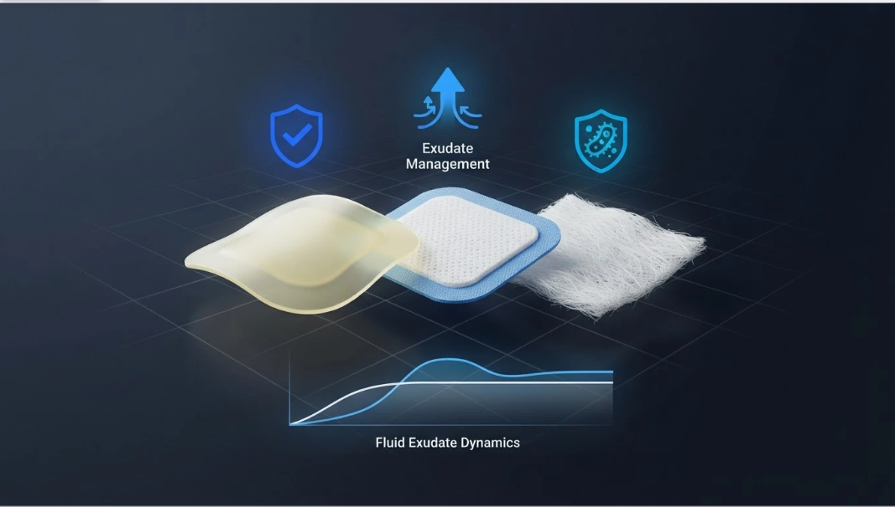

Pocket-WOC • Professional Clinical Assessment Framework
INPATIENT EDITION
Empowering inpatient clinicians with evidence-based skin failure analysis, etiology evaluation, and automated dressing guidance to optimize patient outcomes.
YOUR RECENT ACTIVITY
Recent tool results
Review up to five recent completions per tool. Only completion dates and broad result categories are saved here; assessment answers and patient identifiers are not stored.
Initiate a multi-domain assessment of skin failure (SORA-SF-CAT). Analyze visual morphology, systemic markers, and perfusion to differentiate from mechanical pressure injury.
⌑Upgrade to Access
Upgrade your membership to launch this clinical workflow.
GUIDANCE & ADVISOR

02 / WOUND CARE GUIDANCE
Pocket-WOC Dressing & Wound Advisor
Expert guidance for choosing appropriate dressings based on current wound characteristics, exudate levels, and infection risk. Optimized for Skintegrity Suite protocols.
Counts of generated guidance categories only; no individual assessment responses are stored.
SKINTEGRITY SUITE SUPPORT
Admin Inbox
Inquiries submitted within the authenticated Skintegrity Suite applications. Do not request or include patient identifiers or protected health information.
Inbox is not loaded.
Select an inquiry to view its details.
DISCLAIMER: The information and educational content provided by Skintegrity Partners, LLC is intended for educational and informational purposes only. Skintegrity Partners, LLC provides training, education, and consulting services to healthcare professionals and organizations. Skintegrity Partners, LLC does not provide direct patient care, medical diagnosis, or treatment services. Our services are not intended to replace the clinical judgment, responsibilities, or services of licensed healthcare providers.